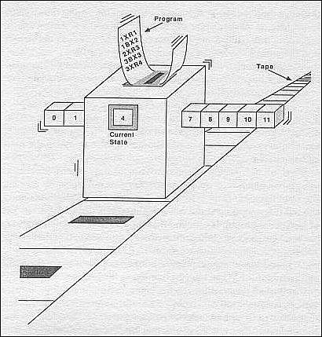
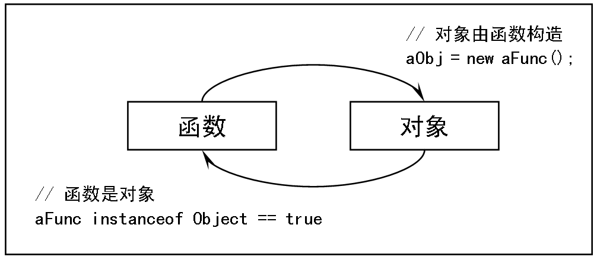

**表面的简洁**
一、把大象装进冰箱
＝＝＝＝＝
在命令式语言（当然我们可以确指为C、Delphi、Java或C#等等）中，初学者的第一
个疑难便是这样的代码（*注1）：
X=X+1
为什么？因为在数学概念中，上述等式是不能成立的。这种表达式是计算机的思维逻
辑：当它运算上述表达式（或语句）时，X被作为暂存单元——例如冰箱。为了让冰箱产
生变化，比如解决“把大象装进冰箱”这样的问题，我们需要如下三步：
把冰箱门打开，把大象放进去，把冰箱门关上
（图1：“把大象装进冰箱”的问题）
因为我们有两只手来分别负责拉住冰箱门和大象，所以整个操作过程看起来很完美，
但接下来我们再加上点需求：我们要“把大象拿出来，把长颈鹿装进去”，怎么办？是的，
应该这样：
把冰箱门打开，把大象拿出来，把长颈鹿装进去，把冰箱门关上。
可惜长颈鹿有腿有思想，所以问题将会出在我们把大象拿出来的那一时刻：长颈鹿跑
掉了。为此，我们必须做很多的防护措施，例如先锁住长颈鹿，再锁住大象，以及在整个
过程中，保证冰箱门不会自动关上或打开……而代码：
X=X+1
的执行过程与此类似：当CPU开始存取X这个位置时，它只能在“当前X”与“下一次X”
之间选择二者之一。当多个线程（或多个CPU）开始存取X这个位置时，如果我们希望得
到相同的X值，那么我们就得在X操作过程中采取象上面一样的防护措施：加一个锁。以
保证要求所有线程都取完了这个“当前X”值，才会被切换到“下一次X”值。
由于这个限制，一旦多个线程都排着队来看看这个X的美妙身形，整个队列就全都慢
下来了。
解决这个问题的办法其实很简单：只要X可见，我们就永远不修改这个X。而这，就
是函数式应对大象问题的方法：如果冰箱里放着大象，就永远不要试图放长颈鹿。所以在
函数式语言Erlang中的变量一旦赋值，就不能再修改。
云风曾在SD2C 2007大会上说：解决问题的最好方法，就是不解决它。这个观点深得
函数式的精髓。
二、帽子戏法的关键，在于至少多一顶帽子
＝＝＝＝＝
杂技中的一种常见帽子戏法，是很多人围成一圈或排成一排然后飞速地传送手中的帽
子。这如果是一个人来表演，那么应该是左右手各一顶帽子，而多出的一顶则总在头上。
（图2：帽子戏法）
所以，关键在于至少要多出一顶帽子。正因为多出来这个帽子，所以我们看到杂技师
在我们面前构建了一个往复不休的循环。事实上程序设计里的“循环”也存在完全相同的
问题：我们至少需要一个变量来保存迭代中的计数，而且这个变量必须是可以修改的(*注
2)。然而这一要求既是玩转“帽子戏法”的必要条件，却又与我们上面讲过的“不修改变
量”的原则相违背。
函数式如何解决这个问题呢？
其实答案还是相同的答案：至少多一顶帽子。只不过，帽子不一定要放在头上，我们
可以把它放在传递的过程中——例如空中——就可以了。要知道，让杂技师用同样的方法
来掷苹果，那多出来的一个就总是在空中了。
在函数式中，我们如果要构建一个循环，那么可以使用函数递归来实现。这上述控制
循环过程的变量，则可以把它放在函数形式参数表——这种类似“空中”的地方。与“空
中”相同的是，我们在静态看函数时，那是参数表；而运行中时，它传入实参。
然而帽子戏法的表演者并没有三只手或更多只手，被循环帽子增加的时候，杂技师除
了加快速度之外，保证一个简单的原则也是极其重要的：总是从帽子队列的最末端取到下
一只帽子。这一原则保证了可以容纳更多帽子，而又不会少处理任何一个。同样的，递归
是消耗栈的，为了使栈空间不爆炸，解决的方法就是在最后一行代码上调用递归，即尾递
归。因为尾递归的存在，函数最末的调用就可以被优先为一行不消耗栈的跳转指令，就像
帽子戏法的杂技师从帽子队列上直接取走轮转到手边的帽子一样。
最后，对于一个函数来说，如果它只返回值而不修改函数外的任何东西，那么这个函
数就是安全的，它等价于它返回的这个值——如前所述的，这个值一旦有效（运算出结果
并传出），就不再变更。所以函数式中的函数调用，可以等价于一个表达式中运算的值。
如同函数调用，函数的递归也只返回值，所以也等价于一个表达式中运算的值。再进
一步的推论，递归实际上等效于循环求值。
复杂的表象下，总会有一个简单的原则。万人的与一个人的帽子戏法，其原则是一样
地：至少多一顶帽子，放在头上，或是空中。
三、计算机其实不认得"hello"
＝＝＝＝＝
32位的unicode，以及128位的GUID等等，都直接与我们现在或将来的存储单位以及
运算的通道大小有关。事实上即使我们有128位机器，我们也只打算在这样的通路上传送
一个字符"h"——而不是字符串"hello"。从更为准确的角度来说，事实上计算机也不认得字
符"h"，而只认得数字0x68。同样的，它也不认得所谓的“真假(true/false)”，而只认得数字
的1/0。

（图3：图灵机的概念图）
我们编程的本质，其实不过是在求值一些数字而已。只是最终我们在自然语义上把这
些数字的一个连续或非连续的集合认为是布尔值、字符串、数组或对象。当我们认识到运
算求值的结果无非是数值，而表达形式又无非是连续或非连续时，我们就得到了基本的数
据抽象单元：值、值系列。再加上我们前面讲到的执行体（函数），我们就得到了整个函数
式语言的鼻祖——LISP——的基本运算模型：
(+ Xn)
其中，“( )”表明一个值系列（表），而“+”在这里指代某种运算，Xn表明值（或值
系列）。整个的表返回一个值，因此也可以将“整个的表（通常这里称为表达式）”等义为
一个值。任何的一个运算，最终输出的仍然只是一个或一系列数字，它被显示在屏幕上，
便成了文本；放在内存中，便成了数据。
当然，现实是这样的机器最终从科学领域走向了民用，在PC（个人计算机）普及的现
在，我们也需要让类似LISP这样的——绝对正确而又绝对非人性的——语言变得亲切一
些。于是稍微复杂而有用一点的函数式语言，例如Erlang，通过丰富了上述的基本运算模
型来使我们的视觉愉悦，或是在讨论它的代码时显得神经（略为）正常一些：
|
**类型** |
**示例** |
| 值 | atom,integer/float,... |
| 值系列 | list(不定长的表，一般非连续存储) tuple(定长的，一般连续存储) |
| 运算 | 函数。特定函数包括：if..end，case..end等。 |
（表一：以Erlang为例的、简单的类型抽象）
而我们逆推一份具体的Erlang代码，其实仍然可以表达为上述的(+ Xn)。例如我们可
以在Erlang代码在编译阶段使用解析树（Abstract Form）中看到这样的抽象代码（abstract
code）：
[{abstractcode,
{rawabstract_v1, [{attribute,1,file,{"./simplest.erl",1}},
{attribute,1,module,simplest},
{function,3,test,0,
[{clause,3,[],[],[{atom,4|...}]}]
},
{eof,1}]
}
}] 无论是从形式，还是从实质来看，这种解析树（在erlang执行中将会按照解析树来生
成语法树并执行）与LISP语言的基本原则都是一致的。
四、从“函数等义于值”到“函数是值”
＝＝＝＝＝
现在，JavaScript语言被更为深入的挖掘并渐渐了解到它的函数式语言本质，而类似
Erlang这样的“天生伤害人的视力”的语言也移步前台。这些语言的努力，使我们终于看
到一个属于函数式语言的时代的曙光。在黎明之前的黑暗中，函数式以它诸多的、最不可
思议的特性迷惘着程序员的目光。连它最基本的概念说明，也如同玄学家的呓语：如同数
学函数是集合A（称为定义域）中成员到集合B（称为值域）中成员的映射，函数式语言
就是通过数学函数的定义、应用的说明和求值完成运算过程的。
类似于这种等同于“什么也没说”的解释，其实的确是在阐述函数式语言的精髓。为
了减轻你的痛苦（但绝非轻视你的智商），我通常换个说法来陈述它们：如果表达式“1+1=2”
中的“+”被理解为求值函数，那么所谓函数式语言，就是通过连续表达式运算求值的语言；
既然上面的表达式可以算出结果“=2”，那么函数式语言自然也可以通过不停地求值找到问
题的答案。
首先，在函数式语言中，函数只表明一个运算过程，并产生一个运算结果。这与表达
式中的运算符具有完全相同的性质——所以事实上一个函数式语言中，表达式的运算符被
实现为一个函数。例如erlang的核心模块中，可以导出类似这样的函数：
| **函数名/参数个数** | **函数名/参数个数** | **函数名/参数个数** |
| '!'/2 | '+'/1 | '-'/1 |
| '*'/2 | '+'/2 | '-'/2 |
| '++'/2 | '--'/2 |
（表二：Erlang中的运算符其实对应于内核函数－部分举例）
所以，函数式语言的本质是表达式/函数的“连续求值”。既然我们的输出或存储最终
只是在关心“值”，那么显然连续求值的结果就可以直接作为他们的输入。如果把输出终端
或存储看成接受输入的设备，那么他也相当于一个函数；如果一台计算设备只对外界表达
为一个或一系列输出，并接受来自其他类似设备的输入，那么计算设备本身也可以视为一
个函数……
我们将这个过程放大，其实网络可以是函数式的。这个就是著名的语用网，它的理论
基础是petri网论（Petri nets theory）。而事实上，作为计算模型来理解，它与函数式语言是
相似、等价的（*注3）。

图4：perti网的“库所变换”
函数式语言通过函数实现了三个基本的运算逻辑（顺序、分支与循环），因此它与我们
常用的命令式语言是等价的(*注4)。但是由于存在存储问题，所以命令式语言是时序相关
的——即有存取某个存储单元的先后问题。而函数式语言由于“把大象装进冰箱”之后就
再也不可更改，因此变得时序无关。
以上述的petri网的例子来讲，由于时序无关，所以图左侧的“库所（圆圈）”中的两
个“消息（黑点）”分解成右侧的两个库所来处理时，其转换的代价为0（无锁），而这个
过程应用在多核机器或分布式网络上时，效率却提高了一倍。
更深层次地思考这个问题，由于在计算机系统中函数本身仍然是以数据形式存储的，
所以函数事实上也是“被运算的对象”和“运算结果”。函数的这种特性被称为高阶函数。
“函数等义于值”是函数式的基础，而“函数是值”，则是高阶函数的基础。

图5：JavaScript统一语言范型的基本模型（*注5）
当“函数是值”时，我们可以把一个函数传递到另一个地方去运算，而其运算结果仍
然是值，所以可以把一个等义的结果再传回来。注意这一过程，就是分布运算的实质，所
以，函数式在本质上、天生地就是支持分布运算的。无论我们是将“一段函数式代码”所
表达的整个运算过程分解成何种形式，并分布在何种复杂的运算环境或网络环境中，只要
最终在逻辑上它能得到一个值序列和一个运算，就能够成为更大范围的分布网络中的一个
结点。
而这，就是整个计算世界的全部（注6）：(symbol)。
＝＝＝＝＝＝＝＝＝＝
注1：《Erlang程序设计》中，作者以这个例子为起始，来讲述Erlang变量的单一赋值。
注2：参见《结构程序设计》，讨论“如何刻画计算的进展”时，作者E.W.Dijkstra说：
（程序）如果含有循环语句，仅用语法指示器就不能描述计算的进展了……（而应该）引
进一个“动态指示器”毫不含糊地累计相应的现行循环的序数……因为，语法指示器无法
充当这种坐标系统的一个组成成分。
注3："Implementing Coloured Petri Nets Using a Functional Programming Language" at
http://portal.acm.org/citation.cfm?id=993039，and Functional Nets at http://lamp.epfl.ch/fn/
注4：不同范型的计算机语言之间等价问题，可以归结到图灵等价这个命题上，这意
味着该运算系统或模型能够执行任何复杂程度的、图灵机可完成的数学运算。2007年，Alex
Smith证明了Wolfram提出了最小的“2,3图灵机（两种颜色，三种状态）”模型是最小完
备的图灵等价系统。
注5：这个统一过程用到了多项与函数式相关的基本设定：函数是执行体、函数等义
于值、函数是值。
注6：与“(+ Xn)”比较，这个表达式认为“运算 +”——也就是某个函数——其实也
是值，因此它也是“值系列”Xn中的一个部分。于是，当由自然语义中的symbol来指代
Xn时，整个表达式就变成了：(symbol)。建议阅读作者的其它两篇文章：
《从表达式到变量：一行scheme代码之所见》
http://blog.csdn.net/aimingoo/archive/2007/02/12/1508118.aspx
《从表达式到函数：表面的简洁》
http://blog.csdn.net/aimingoo/archive/2007/10/08/1815379.aspx